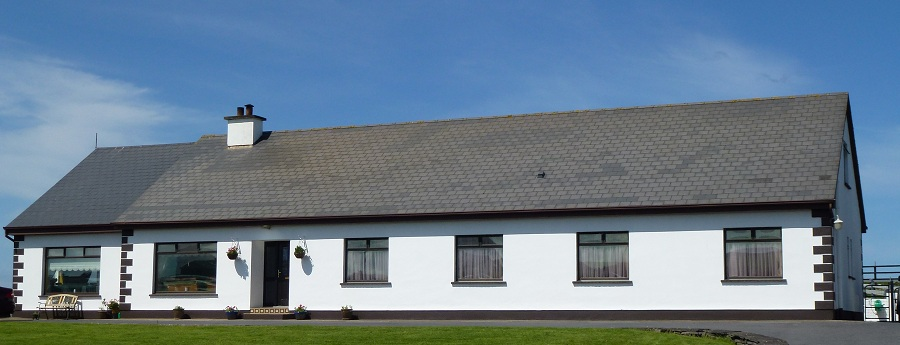
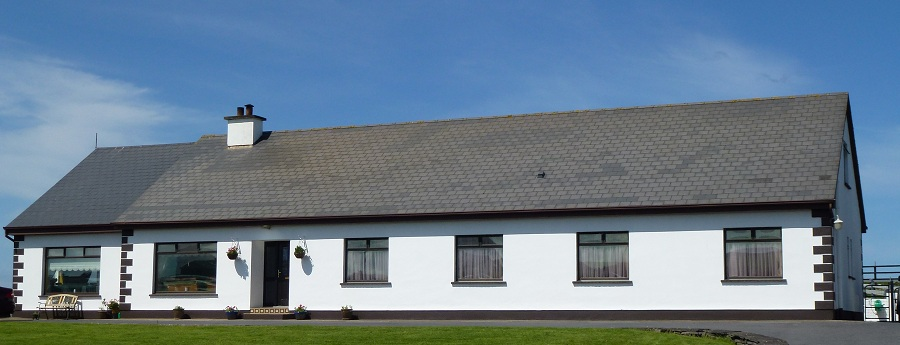

|
 
Qui sommes-nous?
Cois Farraige est un Bed & Breakfast familial situé dans un quartier calme et pittoresque à seulement 1km de la
centre de la ville de Lahinch.
Toutes les chambres avec salle de bain et accès Wifi gratuit dans toute la maison avec une belle vue sur l'océan depuis la salle à manger.
Grand availible chambre familiale qui peut accueillir jusqu'à 5 personnes et des lits bébé availible sur demande.
Tarifs
Les prix sont €35.00 le partage par personne pour Juillet et Août et €30.00 pour €32.50 le partage par personne pour tous les autres mois. Partage enfants ont 50% de réduction. Unique est €45.00
Attractions locales
Lahinch est un petit village sympathique et balnéaire célèbre pour ça longue plage de sable et de grande surf. D'autres attractions incluent une promenade volet, un aquarium et piscine et une variété d'excellents restaurants et cafés.
Lahinch offre aussi beaucoup d'activités différentes. Les golfeurs peuvent choisir entre deux cours liens, de la côte atlantique offre la grande pêche pour les pêcheurs et les surfeurs devraient trouver d'excellentes conditions dans l'un des nombreux spots de surf grands.
Tout cela fait de Cois Farraige est la base idéale pour visiter les attractions locales, telles que:
Lahinch Glof Club: www.lahinchgolf.com
Falaises de Moher: www.cliffsofmoher.ie
Le Burren: www.theburrencentre.ie
Doolin Cave: www.doolincave.ie
Aillwee Cave: www.aillweecave.ie
et beaucoup plus.
Comment réserver
Pour faire une réservation avec nous, vous pouvez tout simplement nous envoyer un courriel par le biais rosie@coisfarraige.net
Ou appelez-nous au (353) 065 7081 580
Où sommes-nous?
Nous sommes situés sur la route Miltown Mably sur le bord de mer que vous sortez de Lahinch dans le sens de Miltown. Cette route est marquée comme la N67 sur les cartes.
|
|
Contactez-nous
Téléphone: (353) 065 7081580
Email: rosie@coisfarraige.net
Adresse: Cregg, Lahinch, Co.Clare, Ireland
Pictures

|
 
